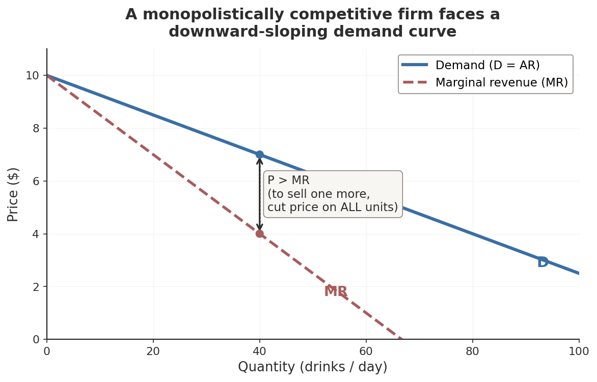
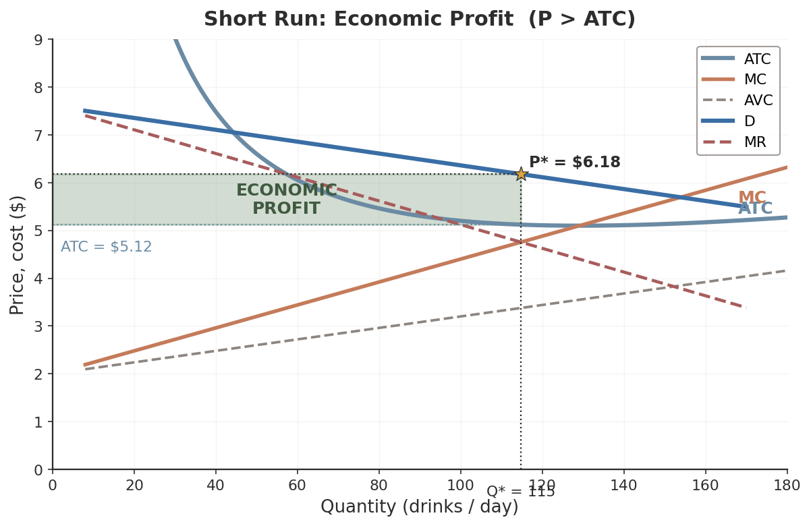
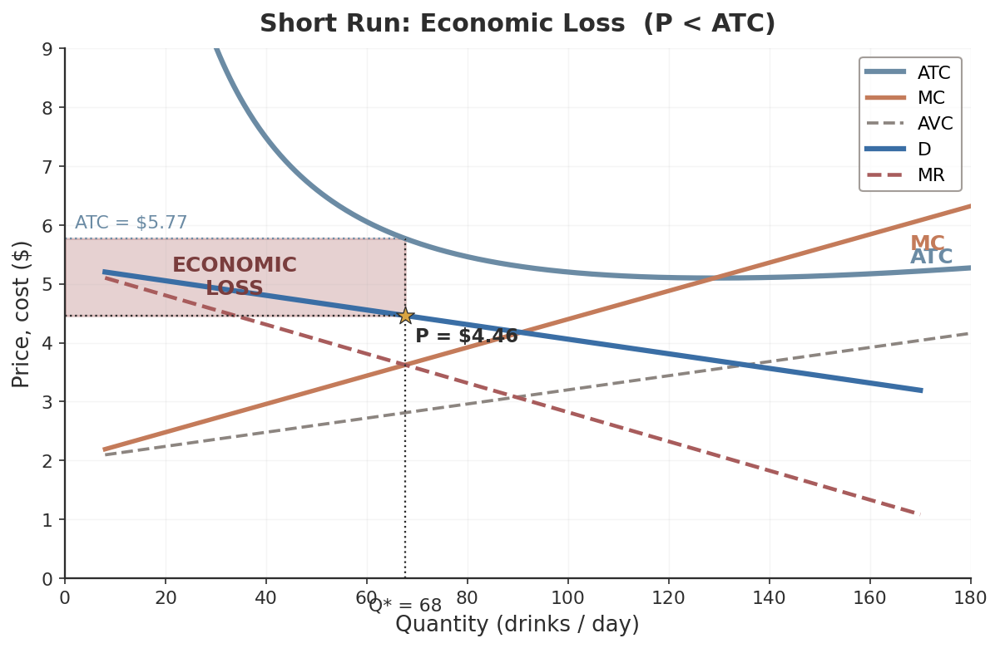
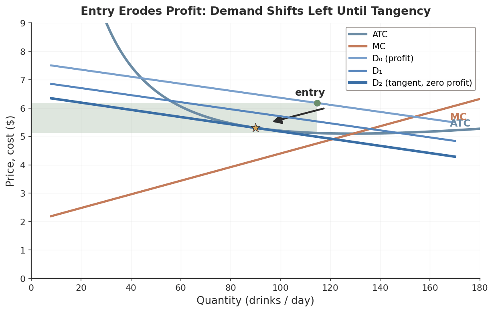
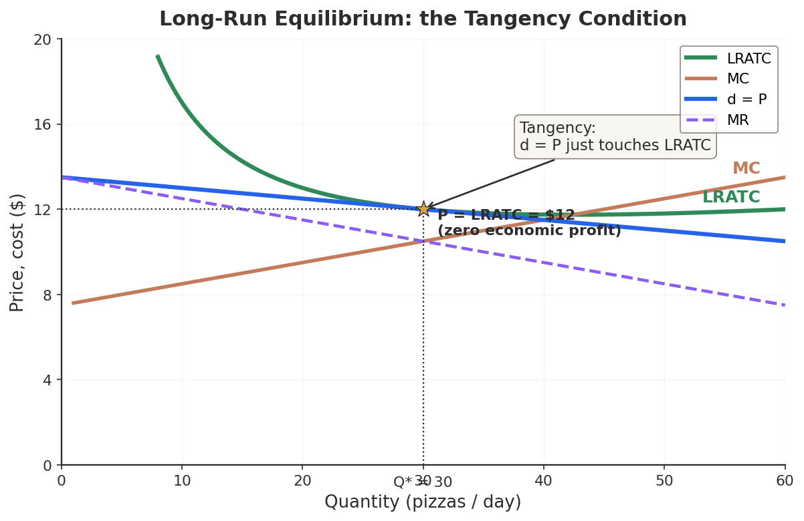
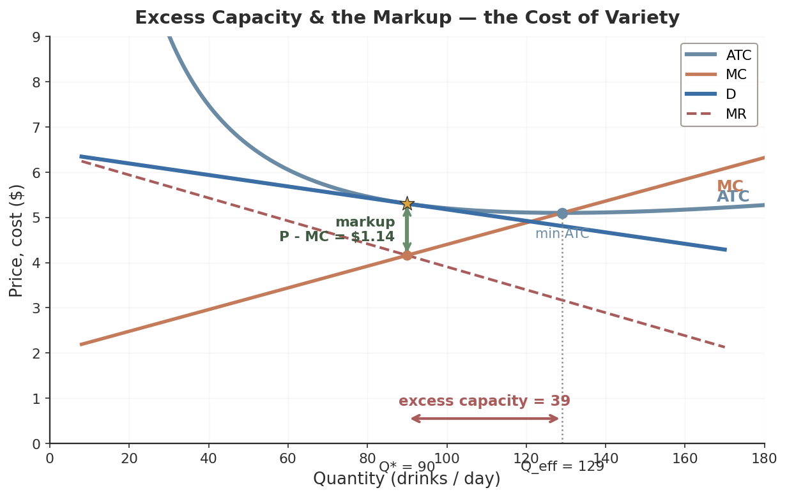
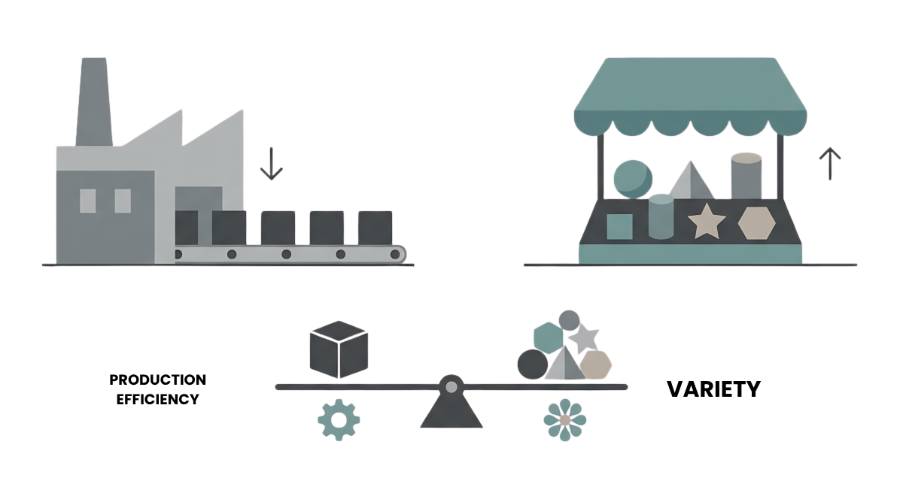
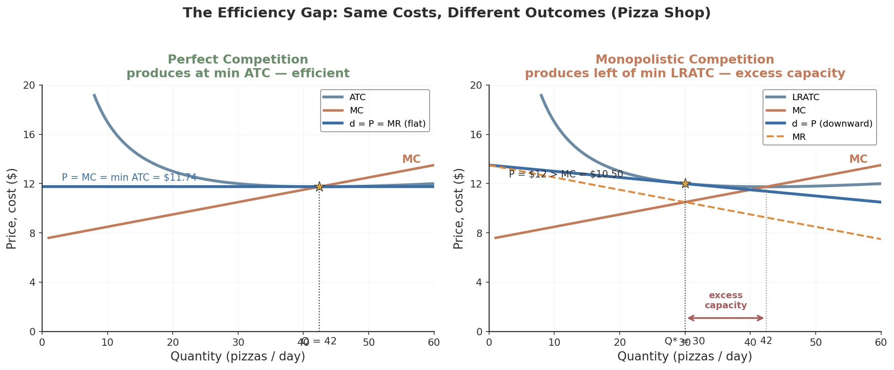

ECON 1116 • Principles of Microeconomics • Chapter 12
Monopolistic Competition — The Cost of Variety
Allbirds was worth $4.1 billion. Five years later it sold for $39 million. The model saw it coming.
Dr. Richeng Piao
Department of Economics
Northeastern University
Learning Objectives
12.1
Define monopolistic competition and identify its four characteristics
12.2
Maximize short-run profit using the MR = MC rule with a downward-sloping demand curve
12.3
Analyze the long-run zero-profit outcome — the demand-ATC tangency condition
12.4
Explain excess capacity and the trade-off between variety and efficiency
12.5
Evaluate product differentiation, branding, and advertising as ways to compete without cutting price
Where We Are on the Spectrum
Ch 10
Perfect competition. Many firms, identical products. Price-taker, flat demand: P = MR = MC.
Ch 11
Monopoly. One firm, no substitutes. Price-maker behind a barrier: P > MR = MC.
Ch 12 — today
Monopolistic competition. Many firms, differentiated products, free entry. The structure you meet most.
Monopolistic competition borrows from both worlds: the downward-sloping demand of a monopolist (because the product is differentiated) and the free entry of perfect competition (because barriers are low). Those two forces fight — and entry wins in the long run.
Over 90% of the goods and services you buy live here: restaurants, coffee shops, clothing, gyms, apps, streaming services.
The Hook: Allbirds, $4.1B → $39M
In 2021, Allbirds was Silicon Valley’s darling — wool sneakers, sugarcane soles, a carbon-neutral story. At IPO it was valued at $4.1 billion, worth more than Under Armour.
A differentiated product in an easy-to-enter market is a magnet for imitators. Hoka, On Running, and dozens of brands copied the playbook.
Revenue collapsed $298M → $152M. Every full-price US store closed by Feb 2026.
March 2026: sold for $39 million. A 99% decline.
This is not a story about bad management.
It is a textbook prediction, rendered in real time.
Short-run profits attract entry → economic profit falls to zero. By the end of today you’ll be able to draw exactly why.
Section 1 · LO 12.1
What Is Monopolistic Competition?
Many firms, similar-but-different products, easy entry
The Name Captures a Tension
Definition
Monopolistic competition — a market structure with many firms selling similar but differentiated products, where entry and exit are relatively easy.
“Competition” — many firms compete for the same customers, and new entrants can join freely.
“Monopolistic” — each firm’s product is a little different, giving it a sliver of market power: raise price without losing every customer.
Four Defining Characteristics
1. Many sellers
A large number of firms, each with a small share. No one dictates the market price.
2. Differentiated products
Close substitutes, not perfect ones. The feature that separates this from perfect competition.
3. Free entry & exit
No patents or huge capital walls. A new oven can fire up in a vacant storefront within months.
4. Independent decisions
Too many rivals to track. No firm reacts to any single competitor — unlike oligopoly (Ch 13).
#2 (differentiation) vs. perfect competition · #4 (independence) vs. oligopoly — these two are the boundary lines.
#1 Many Sellers — Pizza Near Campus
Search “pizza near Northeastern” on Google Maps. You’ll find roughly 50 options within a six-mile radius.
No single shop dominates. Each competes for the same pool of hungry students, but none controls enough of the market to set the price.
That’s “many sellers” — the trait MC shares with perfect competition.

#2 Differentiated — the Key Twist
Homogeneous (Ch 10)
A bushel of wheat from one Kansas farm is identical to the next. Buyers don’t care which farm.
Differentiated (Ch 12)
The margherita at Ciao is not the NY slice at Sal’s — style, ingredients, ambiance, location, hours, delivery.
Each firm makes a product that is a close substitute for its rivals’ — but not a perfect one. That single fact bends the firm’s demand curve downward (the engine of §12.2).
#3 Free Entry & #4 Independence
#3 Free entry & exit
No patents, licenses, or massive capital walls.
Entry: ~300 new craft breweries opened in 2025.
Exit: Allbirds closed every full-price store.
#4 Independent decisions
Each firm is small enough that its choices barely register with rivals.
When UHOP runs a BOGO special, Pizzeria Regina does not call an emergency meeting. Too many competitors to track.
Contrast #4 with oligopoly (Ch 13), where a few firms watch each other’s every move.
Misconception Check
The myth
“Monopolistic competition means the market is partly a monopoly.”
The reality
Every firm has a tiny monopoly on its own specific product — no one else sells the exact same pizza as Ciao. But the overall market is fiercely competitive because close substitutes are everywhere. “Monopolistic” describes the firm’s demand curve, not the market’s structure.
Where It Sits — and Why It’s Everywhere
It sits just right of perfect competition — same crowd and free entry, but with differentiation. Over 90% of what you buy lives here.
Pure digital form
The App Store hosts 1.85M apps (215,000 in “Business” alone). Asana, Monday, Trello, ClickUp, Notion, Basecamp solve the same problem — each differentiated, near-zero entry cost, each facing its own downward-sloping demand.
Section 2 · LO 12.2
Short-Run Profit Maximization
A price-maker with a downward-sloping demand curve — same rule, same picture as monopoly
The Firm Is a Price-Setter, Not a Price-Taker
Raise Ciao’s price by $1 and some customers switch to Sal’s — but the wood-fired regulars stay. So demand slopes down, not flat.
1. Some price control. Price-setter, not price-taker.
2. MR lies below demand. To sell one more, cut price on all units — so MR < P, just like a monopolist.

The Profit-Maximizing Rule
Key Concept — same rule as monopoly
Produce where MR = MC, then charge the price on the demand curve at that quantity.
Step 1. Find Q* where the MR curve crosses the MC curve.
Step 2. Go up to the demand curve to read the price P*. Because P > MR, we get P > MC.
Outcome 1: Short-Run Profit (P > ATC)

At Q* (where MR = MC), the price on the demand curve sits above ATC. The green rectangle is economic profit.
Ghost kitchens, 2020
The industry ballooned to ~$60 billion in revenue. Those profits were a beacon — and within two years, thousands of new entrants arrived.
Outcome 2: Short-Run Loss (P < ATC)

If demand is too weak, the price on the curve falls below ATC. The red rectangle is an economic loss. Persist, and the firm exits.
This is where Allbirds sat by 2024 — a NOPAT margin of −50%.
Outcome 3 — zero economic profit (P = ATC) — is the long-run resting point. That’s §12.3.
Think Like an Economist
A perfectly competitive firm and a monopolistically competitive firm both set MR = MC. But the competitive firm has P = MR, while the MC firm has P > MR.
Which firm produces more, given the same costs? Why?
Intuition: the MC firm stops where MR = MC, but its MR sits below price — so it pulls back to a lower quantity (and a higher price) than the price-taker, who pushes all the way out to P = MC. Hold that thought — it becomes excess capacity in §12.4.
Poll — What Happens Next?
A campus coffee shop is earning $250/day in economic profit selling a differentiated cold brew. Entry barriers are low. What does the model predict over the next year?
A. Profit grows — its brand gives it lasting market power
B. New shops enter, each firm’s demand shifts left, profit → $0
C. Profit stays positive forever — the product is differentiated
D. It should just raise price to capture more profit now
Click your answer. Press ↓ for results.
Poll Results
Answer: B. Positive economic profit attracts entry. Each new differentiated rival steals a few customers, shifting the incumbent’s demand left and flatter until P = ATC and profit hits zero.
C is the trap: differentiation gives a downward demand curve, not immunity from entry. That’s the whole point of §12.3.
Halfway
Break
Next: how free entry grinds those profits down to zero
Section 3 · LO 12.3
Long-Run Equilibrium — Zero Profit
Entry and exit pull every firm to the tangency point
Entry Erodes Profit, Exit Erases Loss
Profit → entry. New firms enter, each stealing a few customers. Every incumbent’s demand shifts left. Stops when profit = 0.
Loss → exit. Firms leave, their customers spread to survivors. Demand shifts right. Stops when losses disappear.
Same self-correction as perfect competition — but here it works by shifting the firm’s demand curve, not the market price.

The Tangency Condition

In long-run equilibrium two conditions hold at once:
1. MR = MC — profit is maximized.
2. P = ATC — economic profit is zero.
Definition. The demand curve is tangent to the ATC curve at Q* — it just kisses it. No firm wants to enter or exit.
Misconception: “Zero Profit = Broke”
The myth
“Zero economic profit means the business is failing.”
The reality
Zero economic profit ≠ zero accounting profit. The firm covers all costs — including the owner’s opportunity cost. The owner earns a normal return: exactly what they’d make in their next-best alternative. It’s a stable equilibrium, not a death sentence.
The Cycle in Real Life: Craft Beer
2010–2018 — profit phase. Early entrants earned strong margins. Entry cost only ~$500K–$2M.
2015–2022 — entry wave. Breweries tripled: ~3,500 → over 9,700.
2023–2026 — adjustment. 2025: 481 closures vs only 300 openings. Production fell 5.1%.
Profit → entry → zero profit → overshoot → exit. The textbook cycle, lived out over 15 years.
Section 4 · LO 12.4
Excess Capacity & the Cost of Variety
Zero profit, but not efficient — and that’s the price of having choices
Tangency Lands Left of Minimum ATC

Because demand slopes down, it can only be tangent to the U-shaped ATC on its downward portion — to the left of minimum ATC.
Definition. Excess capacity = the gap between actual output and the cost-minimizing output. Unused productive potential.
The firm could produce more at a lower average cost — but it doesn’t. It runs persistently below efficient scale.
What Excess Capacity Looks Like
A coffee shop on a Tuesday at 3 PM: half-empty tables, idle espresso machines, baristas waiting. That is excess capacity.
The efficient model would be a bare drive-through window — minimum cost per cup. But customers value the leather chairs, the music, the pour-over options.
Digital version: Netflix, Disney+, Max, and Peacock each run redundant servers, apps, and marketing teams. One merged platform would be cheaper — but you’d lose the variety.

The Markup: P > MC
Definition
Markup = P − MC. In monopolistic competition it is positive.
A positive markup means some transactions that would benefit both buyer and seller never happen — the consumer who values a cup between MC and P walks away. That’s the allocative inefficiency.
Contrast: perfect competition drives P = MC, so no such gap exists.

Is It Inefficient? Variety vs. Efficiency
Versus perfect competition, MC looks wasteful: excess capacity and a markup. But perfect competition requires identical products — one coffee, one pizza, one streaming service.
The excess capacity and the markup are the price we pay for variety.
Mankiw & Whinston (1986): free entry can produce a socially excessive number of firms (the “business-stealing” effect) — but each entrant also adds a new variety. The net welfare effect is ambiguous.

The Efficiency Gap, Side by Side

Same cost curves. PC settles at min ATC with P = MC (efficient). MC settles left of it, P > MC, with excess capacity — the geometry of variety.
Think Like an Economist
Suppose the government mandated a single, standardized note-taking app for all smartphones — one app, maximum efficiency, lowest possible cost.
Would society be better off? What would be lost?
Efficiency would rise — but variety, experimentation, and the match to different users’ needs would vanish. That trade-off is monopolistic competition.
Section 5 · LO 12.5
Differentiation & Advertising
How firms compete without cutting price
Four Ways to Differentiate
If you can’t hold profit through price, you compete on everything else. Firms differentiate along four dimensions:
Physical / quality
Location
Branding / perception
Service / experience
Physical & Quality — Boston Groceries
Market Basket
Competes on price — about 15% below average.
Trader Joe’s
~4,000 items, 80% private-label exclusives you can’t get elsewhere.
Whole Foods
Organic certification and premium presentation.
All three sell groceries. None sells the same product. Each carved a different niche on the same shelf.
Location — the Captive Audience
Same Starbucks drink, 2024–25
$6.70
Logan Airport
$4.05
Boston street
Identical drink, $2.65 difference. Why?
The airport faces a captive audience — few substitutes past security. That steepens the demand curve (less elastic), so the firm captures a bigger markup.
Branding & Switching Costs
Interbrand values Apple’s brand alone at $470.9 billion (2025). In tech, brand equity shows up as switching costs.
Definition
Switching costs — the time, money, and effort to move from one firm’s product to a rival’s. Higher switching costs → more market power.
Embed yourself in Apple’s ecosystem — iPhone, iCloud, Apple Watch, Family Sharing — and each new device raises your switching cost by an estimated 15–20%.
A loyal customer who’d lose their whole ecosystem won’t switch for a small price gap. The demand curve steepens.
Service & Experience — Coffee
Dunkin’
Sells speed and value. In and out.
Pavement Coffeehouse
Cozy sofas, craft bagels, laptop charging. Sells the experience. Avg independent ticket: $8.47.
Data Snapshot — US independent coffee shops
Over 64,000 independents. Chains hold ~62% of the footprint, but indies grow 3.2%/yr — faster than chains. Their weapon: differentiation. Sources: World Coffee Portal 2025; IBISWorld.
Advertising: Two Views
Informational
Provides real information (price, quality, availability), reduces search costs, and promotes competition.
Persuasive
Shapes preferences and builds brand loyalty — insulating firms from price competition.
Because P > MC, selling one more unit is always profitable — so MC firms have a structural incentive to advertise. Ads try to shift demand right and make it less elastic.
Definition. Informational advertising reduces search costs and promotes competition; persuasive advertising shapes preferences and can reduce it.
Evidence: The Benham Eyeglass Study
Eyeglass prices, states that banned advertising
+25%
higher than states that allowed it (Benham, 1972)
When firms could advertise, consumers could compare prices — and competition drove costs down.
Clean support for the informational view: more information → more competition → lower prices.
Advertising as a Quality Signal
A 30-second Super Bowl spot cost ~$8 million in 2026. Why spend that if your product is bad?
You wouldn’t. Only a firm confident in repeat purchases would make the bet. The expenditure itself is the message.
Field experiment — Sahni & Nair (2020)
Restaurants labeled as paid ads received 77% more calls than unlabeled ones. Diners read the willingness to pay for placement as a credible quality signal.
Poll — Why Is the Ad a Credible Signal?
A startup pays $8 million for one Super Bowl ad. In Nelson’s signaling framework, why does that credibly signal quality to consumers?
A. It proves the firm is large and well-funded
B. Only a firm expecting repeat buyers can recover $8M — a bad product can’t
C. The ad directly lowers the firm’s marginal cost
D. Super Bowl ads are pre-screened for quality by the network
Click your answer. Press ↓ for results.
Poll Results
Answer: B. The ad is credible because the cost is only recoverable through repeat purchases — which a low-quality product can’t generate. The signal lies in what the firm is willing to risk.
A conflates deep pockets with quality; C/D describe mechanisms that don’t exist. Sahni & Nair found consumers act on exactly this logic (+77% calls).
Economist at Work: Edward Chamberlin
Edward Chamberlin (1899–1967) spent his career at Harvard developing the theory of monopolistic competition, published in 1933. His radical claim: most markets feature differentiated products — not the textbook poles of pure competition or pure monopoly.
He also pioneered experimental economics, running classroom market experiments in the 1940s that anticipated Vernon Smith’s Nobel-winning work (Ch 10).
Chamberlin died in 1967, two years before the first Nobel in Economics. Joan Robinson, who developed a parallel framework the same year at Cambridge, was also passed over.
Section 6 · LO 12.1–12.5
Monopolistic Competition in Action
The cycle, everywhere you look
Campus Coffee, Finally Classified
Ch 9: we built its cost structure — FC $3,750/mo, VC $15/hr/barista + $1.50/drink, break-even 1,399 drinks/mo.
Ch 10: it failed the homogeneity test for perfect competition.
Now we can name it: monopolistic competition. Differentiated product, many rivals, free entry.
The market is rebalancing
US coffee shops: $74.3B revenue (2025). Even Starbucks closed ~400 stores. Weak differentiators exit; strong ones survive at zero economic profit.
The Same Cycle, Three Industries
Streaming wars
Netflix profits → entry 2019–22 → Disney+ lost 700K subs in a quarter; CNN+ & Quibi shut down.
The software paradox
Salesforce $37.9B (complex) vs HubSpot ~$45/user (simple). ChatGPT share 87% → 68% as Gemini hit 18%.
The DTC graveyard
Warby Parker, Casper, Allbirds, Away. By 2024, >50% of public DTC firms lost half their IPO value.
Profit attracts entry → entry erodes profit → weak firms exit. The chapter’s prediction, on repeat.
The Four Structures, Side by Side
| Feature | Perfect Comp. | Monop. Comp. | Oligopoly | Monopoly |
|---|---|---|---|---|
| Number of firms | Many | Many | Few | One |
| Product type | Identical | Differentiated | Either | Unique |
| Entry barriers | None | Low | High | Very high |
| Long-run profit | Zero | Zero | Possible | Possible |
| P vs. MC | P = MC | P > MC | P > MC | P > MC |
| Efficiency | Prod. + alloc. | Neither | Neither | Neither |
Dixit–Stiglitz (1977) formalized the welfare gain from variety; Paul Krugman built on it to win the 2008 Nobel. MC is “inefficient” on paper — but the variety it delivers has genuine value.
Behavioral Lens: The Paradox of Choice
Psychologist Barry Schwartz: too many options can make consumers worse off.
Faced with 30 varieties of jam, shoppers are less likely to buy any.
Faced with dozens of streaming services, some feel “subscription fatigue” and cancel everything.
MC predicts more variety helps — behavioral econ warns there’s a point where it overwhelms.
Data Snapshot — US restaurants
Projected $1.55T sales in 2026; 15.8M jobs. Survival: 83% at 1 yr, 51% at 5 yrs, 35% at 10. National Restaurant Assoc. 2026; BLS.
Key Takeaways
1. Monopolistic competition = many firms, differentiated products, free entry, independent decisions. Over 90% of what you buy.
2. Differentiation → downward demand → firm maximizes where MR = MC, with P > MC (the monopoly rule).
3. Free entry drives long-run profit to zero: demand becomes tangent to ATC, P = ATC.
4. Tangency sits left of min ATC → excess capacity + a positive markup. Less efficient than PC — the price of variety.
5. Firms compete on differentiation, branding, switching costs, and advertising — which can inform, persuade, or signal quality.
Connections
Built on
Ch 9 cost curves, Ch 10 entry/exit & efficiency, Ch 11 the MR < P / MR = MC machinery.
Today
The hybrid: a sliver of market power that free entry competes away — leaving variety, excess capacity, and zero profit.
Next time — Ch 13
Oligopoly & game theory: what happens when there are only a few firms and they must watch each other?
We’ve now walked the whole spectrum’s left half: perfect competition → monopolistic competition → monopoly. Ch 13 fills the last gap — the few-firm middle.
Exit Ticket
A pizza shop in long-run equilibrium has P = $14, ATC = $14, and MC = $9 at its chosen quantity.
(a) Economic profit? (b) Markup? (c) Is this allocatively efficient?
(a) P = ATC → zero economic profit. (b) Markup = P − MC = $14 − $9 = $5. (c) No — P > MC, so some buyers who value a pizza between $9 and $14 are priced out. That gap is the cost of variety.
Submit on the way out. See you for Chapter 13 — Oligopoly & Game Theory.